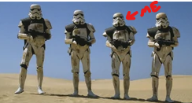

Our trip to Tatooine was a bust. We didn't find the droids we were looking for but it wasn't a total loss.
After a long and boring tour of the sand dunes (FYI the ENTIRE planet is one big sand dune in case you're planning a trip), we
conveniently arrived at the gift shop.
The owner, a Jawa named Utini, was very eager to sell me a knock off Boba Fett bobblehead until I showed him a
pic of my vast collection which contained the real deal. That's when he pulled out the "good" stuff. I managed to
find a couple Sith artifacts among the rubble and you all know by now how much I LOVE Sith stuff, so I began to
haggle with Utini to get him to come down on his "touristy" prices to something more reasonable. I don't know if you've
ever tried to haggle with a Jawa but it takes a speach skill of around 100 to even get him to talk to you. Fortunately
I was able to get him down to 10 credits per item, lucky me! I am now the proud owner of a red Kyber crystal and a couple
saber parts that, when added to my collection, should allow me to finally build a complete saber! I can't wait to show the guys
in my squad. They're going to be supes jealous, haha.

Today's Q&A:
Hey ST4L! What's it like living on the Death Star?
Well my friend, it ain't all sunshine and rainbows. As a matter of fact, we're in the middle of outer space,
there is no sunshine or rainbows lol. What we do have is a great group of guys who live, sleep, eat, fight,
and play together. It gets pretty monotonous around here so we are constantly on the lookout for any type of fun.
This one time a friend of mine, we'll call him Bob (not his real name), got a hold of some
potent Mandalorian Ale from a black market trader we captured. A few drops of this stuff would strip the paint
off of a Star Destroyer! So Bob drank entirely too much of this poison and decides to take off his armor and go
streaking past the big guy's office! We never heard from Bob again, unfortunately. My point is, if you have a
choice, try to get stationed at a nice temperate outpost instead of the Death Star.